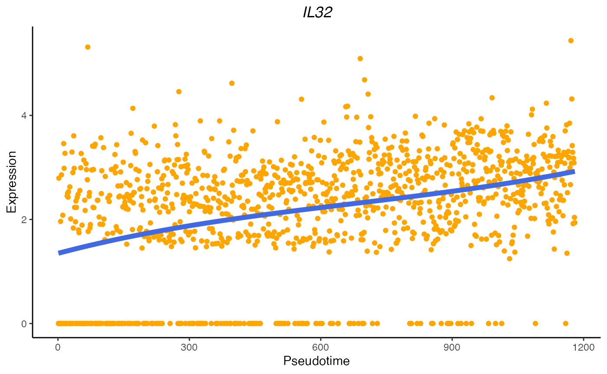

Model temporal gene expression patterns
Haotian Zhuang
February 01, 2024
Source:vignettes/PreTSA_temporal.Rmd
PreTSA_temporal.RmdIntroduction
We will demonstrate how to use PreTSA to fit the gene expression along pseudotime values and identify temporally variable genes (TVGs).
The 3K peripheral blood mononuclear cells (PBMC3K) dataset was
downloaded from the 10x
website. The processed PBMC3K dataset was downloaded using the R
package SeuratData. TSCAN was used to
construct a pseudotime trajectory from naive CD4 T cells to memory CD4 T
cells with the top 10 principal components (PCs) and the cell clusters
obtained from the dataset. Genes that are expressed in fewer than 5
cells within the trajectory were filtered out. We analyzed a final set
of 10,509 genes on 1,180 cells.
Load packages and datasets
library(PreTSA)
load(system.file("extdata", "pbmc3k", "pbmc3k_cleaned.Rdata", package = "PreTSA"))
str(expr)
#> Loading required package: Matrix
#> Formal class 'dgCMatrix' [package "Matrix"] with 6 slots
#> ..@ i : int [1:953387] 22 52 157 168 190 252 350 430 486 554 ...
#> ..@ p : int [1:1181] 0 238 508 958 1290 1691 2211 2596 2842 3257 ...
#> ..@ Dim : int [1:2] 10509 1180
#> ..@ Dimnames:List of 2
#> .. ..$ : chr [1:10509] "LINC00115" "NOC2L" "HES4" "ISG15" ...
#> .. ..$ : chr [1:1180] "CTAATAGAGCTATG" "TAGTCTTGGCTGTA" "ACTTGTACCTGTCC" "CACCCATGTTCTGT" ...
#> ..@ x : num [1:953387] 2.87 2.87 5.46 2.87 3.54 ...
#> ..@ factors : list()
str(pseudotime)
#> Named int [1:1180] 1 2 3 4 5 6 7 8 9 10 ...
#> - attr(*, "names")= chr [1:1180] "CTAATAGAGCTATG" "TAGTCTTGGCTGTA" "ACTTGTACCTGTCC" "CACCCATGTTCTGT" ...Fit the gene expression along pseudotime values
fitRes <- temporalFit(expr = expr, pseudotime = pseudotime, knot = F)
str(fitRes)
#> num [1:10509, 1:1180] 0.00238 0.16975 0.00847 0.34266 -0.00666 ...
#> - attr(*, "dimnames")=List of 2
#> ..$ : chr [1:10509] "LINC00115" "NOC2L" "HES4" "ISG15" ...
#> ..$ : chr [1:1180] "CTAATAGAGCTATG" "TAGTCTTGGCTGTA" "ACTTGTACCTGTCC" "CACCCATGTTCTGT" ...The argument “knot” indicates whether to select the optimal number of knots automatically (FALSE by default). The argument “maxknotallowed” is the user-defined maximum number of knots (10 by default).
temporalFit(expr = expr, pseudotime = pseudotime, knot = T, maxknotallowed = 10)Identify temporally variable genes (TVGs)
To account for the pseudotime uncertainty, we apply the similar
strategy used in PseudotimeDE. The argument
“pseudotime_permute” is a list of permuted pseudotime values from
subsampled cells. Each element in the list has the same format of the
argument “pseudotime”.
pseudotime_permute <- readRDS(system.file("extdata", "pbmc3k", "pbmc3k_pseudotime_permute.rds", package = "PreTSA"))
length(pseudotime_permute)
#> [1] 100
str(pseudotime_permute[[1]])
#> Named int [1:944] 1 2 3 4 5 6 7 8 9 10 ...
#> - attr(*, "names")= chr [1:944] "AAATTCGAGGAGTG" "GAGATGCTGAATGA" "TATCTTCTAAACAG" "GCAAGACTACTGGT" ...
temporalTest(expr = expr, pseudotime = pseudotime, pseudotime_permute = pseudotime_permute, knot = F)To reduce the computational time, users can ignore the pseudotime uncertainty, which is the default setting.
testRes <- temporalTest(expr = expr, pseudotime = pseudotime, pseudotime_permute = NULL, knot = F)It returns a data frame with the p-value, FDR, and the number of knots selected for each gene.
head(testRes)
#> fdr pval knotnum
#> LINC00115 9.784399e-01 9.589589e-01 0
#> NOC2L 8.891055e-01 7.825888e-01 0
#> HES4 9.999038e-01 9.998087e-01 0
#> ISG15 2.309152e-15 1.098654e-17 0
#> C1orf159 2.306248e-01 5.202783e-02 0
#> TNFRSF18 1.130205e-06 2.097155e-08 0Visualize the fitted expression
As an example, IL32 is an known gene associated to T cell activation process. The fitted PreTSA curve shows an increasing trend.
library(ggplot2)
genename <- "IL32"
df.gene = data.frame(ptime = pseudotime, ori = expr[genename, ], pretsa = fitRes[genename, ])
ggplot(data = df.gene) + geom_point(aes(x = ptime, y = ori), color = "orange") +
geom_line(aes(x = ptime, y = pretsa), linewidth = 2, color = "royalblue") +
labs(x = "Pseudotime", y = "Expression", title = genename) + theme_classic() +
theme(plot.title = element_text(hjust = 0.5, face = "italic"))
Session Info
sessionInfo()
#> R version 4.2.1 (2022-06-23)
#> Platform: x86_64-apple-darwin17.0 (64-bit)
#> Running under: macOS Big Sur ... 10.16
#>
#> Matrix products: default
#> BLAS: /Library/Frameworks/R.framework/Versions/4.2/Resources/lib/libRblas.0.dylib
#> LAPACK: /Library/Frameworks/R.framework/Versions/4.2/Resources/lib/libRlapack.dylib
#>
#> locale:
#> [1] en_US.UTF-8/en_US.UTF-8/en_US.UTF-8/C/en_US.UTF-8/en_US.UTF-8
#>
#> attached base packages:
#> [1] stats graphics grDevices utils datasets methods base
#>
#> other attached packages:
#> [1] ggplot2_3.4.2 Matrix_1.5-1 PreTSA_1.0
#>
#> loaded via a namespace (and not attached):
#> [1] highr_0.10 pillar_1.8.1 bslib_0.4.2 compiler_4.2.1
#> [5] jquerylib_0.1.4 tools_4.2.1 digest_0.6.31 tibble_3.2.1
#> [9] jsonlite_1.8.4 evaluate_0.19 memoise_2.0.1 lifecycle_1.0.3
#> [13] gtable_0.3.1 lattice_0.20-45 pkgconfig_2.0.3 rlang_1.1.0
#> [17] cli_3.6.1 rstudioapi_0.14 yaml_2.3.6 pkgdown_2.0.7
#> [21] xfun_0.39 fastmap_1.1.0 withr_2.5.0 dplyr_1.1.1
#> [25] stringr_1.5.0 knitr_1.41 generics_0.1.3 desc_1.4.2
#> [29] fs_1.5.2 vctrs_0.6.1 sass_0.4.4 systemfonts_1.0.4
#> [33] tidyselect_1.2.0 rprojroot_2.0.3 grid_4.2.1 glue_1.6.2
#> [37] R6_2.5.1 textshaping_0.3.6 fansi_1.0.3 rmarkdown_2.19
#> [41] farver_2.1.1 purrr_1.0.1 magrittr_2.0.3 scales_1.2.1
#> [45] htmltools_0.5.4 matrixStats_0.63.0 splines_4.2.1 colorspace_2.0-3
#> [49] labeling_0.4.2 ragg_1.2.5 utf8_1.2.2 stringi_1.7.8
#> [53] munsell_0.5.0 cachem_1.0.6